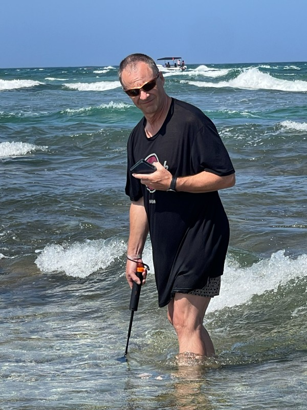

Galerie
Wolf-Rayet-Nebel im Schwan
Spiralgalaxie im Großen Bären
312 × 60s Belichtung
Weitfeld im Kepheus
Emissionsnebel im Schwan
Emissionsnebel in der Schlange
Spiralgalaxie in der Andromeda
Aufnahmedaten
Aufnahmedaten
Aufnahmedaten
Blog
DIY-Projekte
Raspberry-Pi-basiertes Teleskop-Steuerungssystem mit Plate-Solving, Autoguiding und NINA-Anbindung — Open-Source-Ersatz für das defekte Celestron-Alignment.
Kurze Beschreibung des Projekts.
Kurze Beschreibung des Projekts.
Kurze Beschreibung des Projekts.
Über mich

Schon als Kind hat mich das Universum in seinen Bann gezogen. Science-Fiction und der Weltraum waren für mich weit mehr als Unterhaltung: Sie waren Fenster in andere Welten. Meine absoluten Lieblingsserien — Raumschiff Enterprise, Mondbasis Alpha 1 und UFO — ließen mich stundenlang von fernen Galaxien, fremden Zivilisationen und den Weiten des Alls träumen.
Auch der Blick in den Nachthimmel hat mich nie losgelassen. Besonders beeindruckt haben mich immer die atemberaubenden Aufnahmen von Deep-Sky-Objekten: leuchtende Nebel, majestätische Galaxien und Sternhaufen, die Millionen von Lichtjahren entfernt sind und doch zum Greifen nah erscheinen.
So wuchs in mir der Wunsch, diese Schönheit nicht nur zu bestaunen, sondern selbst festzuhalten. Die Astrofotografie wurde zu meiner Leidenschaft, und ich habe das Glück, einen eigenen Balkon zu besitzen — mein kleines Observatorium für den Alltag. Mein nächstes großes Ziel ist eine eigene Sternwarte im Garten.